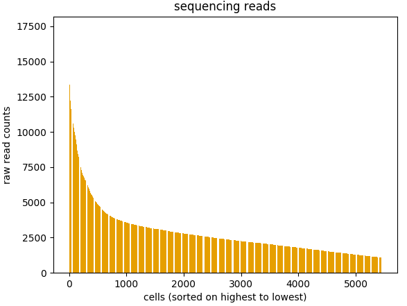

Welcome to adobo’s documentation!¶
What adobo is¶
adobo is an analysis framework consisting of a set of Python modules to enable exploratory analysis of single cell RNA-seq data (scRNA-seq). adobo can be used to compose scripts, used in interactive workflows and much more. adobo is developed by Oscar Franzén (limited support is available over e-mail: p.oscar.franzen@gmail.com).
Note
adobo is developed and tested on Python version 3.5.3 - older versions may work but are untested.
Installation¶
The easiest way to install adobo is to clone the GitHub repository:
$ git clone https://github.com/oscar-franzen/adobo.git
Support for pip3 installation is on the TODO list.
Getting started¶
Loading the package¶
The first step is to load the adobo package by importing it:
import adobo as ad
Note
Debug information in the form of traceback output is suppressed by default. However, this information is often useful when trying to solve program bugs. To enable full traceback set:
ad.debug=1
Loading your data from a text file¶
First we need to create a new adobo object, which is an instance of the class adobo.data.dataset. This will be a new object containing your single cell data. The input file should be a gene expression matrix (rows as genes and cells as columns) in plain text format. Fields can be separated by any character (default is tab) and it can be changed with the sep argument. The data matrix file can have a header or not (header=0 indicates a header is present, otherwise use header=None). If the header of your gene expression matrix contains a label for gene symbols, set column_id='yes' or simply column_id='auto' to autodetect this. adobo.IO.load_from_file() calls pandas.DataFrame.read_csv() and any additional arguments are passed into this function. The function adobo.IO.load_from_file() is used to load data from a raw read count matrix and the returned object is an instance of adobo.data.dataset:
data = ad.IO.load_from_file('GSE95315.tab', column_id='auto')
Important
The loaded data must not be normalized, i.e. it should be raw read counts.
Note
All downstream operations and analyses are performed and stored in the adobo object, i.e. functions are applied on this object.
Note
Most adobo functions also have a verbose argument, which when True makes the function more informative.
Getting detailed help¶
All functions in adobo have extensive documentation, which are accessible as docstrings on the Python interactive console as well as online:
help(ad)
help(ad.IO.load_from_file)
Loading compressed data¶
scRNA-seq is zero inflated, and therefore compress strongly. We can load the compressed data directly without having to uncompress it first; the compression format is detected automatically (gzip, bz2, zip and xz are supported). For example:
data = ad.IO.load_from_file('GSE95315.tab.gz', column_id='auto')
Your gene expression data is stored in the attribute data.exp_mat, and after loading it is good to examine that the data were loaded properly:
>>> data
53,889 genes and 384 cells were loaded
Data examination¶
It’s can be useful to examine number of reads per cell in a barplot format:
ad.plotting.barplot_reads_per_cell(data)
Which will generate the plot:
It is also a good idea to examine number of expressed genes per cell:
ad.plotting.barplot_genes_per_cell(data)
Cleaning your data¶
Before we proceed to normalization we should start with some data cleaning. A good first step is to look for empty cells and genes. Empty genes/cells do obviously not carry any information and can be removed:
ad.preproc.remove_empty(data)
Detecting ERCC spikes¶
ERCC are known amounts of synthetic constructs added to RNA-seq libraries for quality control and normalization purposes [1]. Not all experiments use ERCC spikes, but many do. The ERCC “genes” are usually prefixed with ERCC- in the gene expression matrix. This function is used to put them aside so that they are not included in downstream analyses.
Note
The ERCC_pattern argument can be used to set a regular expression for detecting these “genes”.
The adobo.preproc.detect_ERCC_spikes() is used to filter out the ERCC (stored in adobo.data.dataset._exp_ERCC):
ad.preproc.detect_ERCC_spikes(data)
Detecting mitochondrial genes¶
It’s often a good idea not to include the mitochondrial genes in the analysis and some downstream analyses require that adobo knows which genes are mitochondrial. Usually the mitochondrial genes in human and mouse genomes have gene symbols starting with the prefix mt-, but this might vary from species to species.
ad.preproc.detect_mito(data)
Or specify a custom regular expression to identify them:
ad.preproc.detect_mito(data, mito_pattern='^mito-')
Applying simple filters¶
Simple filters refers to applying a strict minimum cutoff on the number of expressed genes per cell and the total read depth per cell. Simple filters are usually effective in removing low quality cells and uninformative genes. If your data come from Drop-seq, 10X, etc, requiring at least 1000 uniquely mapped reads per cell is often sufficient:
ad.preproc.simple_filter(data, minreads=1000, minexpgenes=0.001)
Important
If your protocol is applying full-length mRNA sequencing, e.g. SMART-seq2, then your minreads threshold should be higher, for example 10000.
It is also desirable to remove genes with an expression signal in very few cells; such genes may contribute more noise than information. The minexpgenes argument can be used to control how genes are filtered out. If you wish to not remove any genes at all, simply set it to zero:
ad.preproc.simple_filter(data, minreads=1000, minexpgenes=0)
Setting minexpgenes to a fraction indicates that at least that fraction of cells must express any gene. If minexpgenes is an integer it refers to the absolute number of cells that at minimum must express the gene for the gene not to be filtered out.
Automatic detection of low quality cells¶
A more sophisticated approach to detection of low quality cells is to use the function adobo.preproc.find_low_quality_cells(), which uses Mahalanobis distance to identify bad cells from five quality metrics.
Important
find_low_quality_cells requires that there are ERCC spikes in your data.
The argument rRNA_genes should either be a string containing the full path to a file on disk contaiing genes that are rRNA genes (the file should have one gene per line). rRNA_genes can also be a pandas.Series object with gene symbols.
ad.preproc.find_low_quality_cells(data, rRNA_genes=rRNA)
Like all adobo functions, find_low_quality_cells modifies the passed object. However, find_low_quality_cells also returns a list of cells that are classified as low quality; to prevent such behavior simply assign the return to a variable:
low_q_cells = ad.preproc.find_low_quality_cells(data, rRNA_genes=rRNA)
Normalization¶
Normalization removes technical and sometimes experimental biases and is always necessary prior to analysis. Because a single normalization scheme for scRNA-seq data is not available, adobo supports several different procedures:
- standard
Performs a standard normalization by scaling with the total read depth per cell and then multiplying with a scaling factor.
- rpkm
Normalizes read counts as Reads per kilo base per million mapped reads (RPKM) [2]. This method should be used if you need to adjust for gene length, such as in a SMART-Seq2 protocol. To use this procedure you must first prepare a file containing combined exon lengths for genes; the file should contain two columns, without a header, and columns separated by one space. The following columns must be present: (1) gene symbols and (2) the sum of exon lengths.
- fqn
Performs full quantile normalization [3]. FQN was a popular normalization scheme for microarray data. It is not very common in single cell analysis despite having been shown to perform well [4]. The present implementation does not handle ties well.
- clr
Centered log ratio normalization. This normalization scheme was introduced in Seurat version 3.0 [5]. It is a simple normalization scheme and is an alternative to
standard.- vsn
Variance stabilizing normaliztion based on a negative binomial regression model with regularized parameters. Introduced by [6] and represents the most complex scheme of the above; appears to marginally improve resolution.
All normalization schemes, except vsn, can be followed by log (base 2) transformation (set by the log2=True flag, which is enabled by default).
To perform a standard normalization followed by log2 transformation, run:
ad.normalize.norm(data, method='standard')
Note
If you have previously executed adobo.preproc.detect_ERCC_spikes(), ERCC spikes will be normalized too, and these can be found in adobo.data.dataset.norm_ERCC.
Examining analysis history¶
Downstream analyses are performed on the data object. At any time it’s possible to examine what functions have been applied on data object by calling adobo.data.dataset.assays():
>>> data.assays()
Number of mitochondrial genes found: 0
Number of ERCC spikes found: 92
Normalization method: <not performed yet>
Has HVG discovery been performed? No
Detection of highly variable genes¶
Most algorithms used in scRNA-seq analysis performs better when performed only on a subset of measured genes [7]; this subset is for the most time selected as highly variable genes (HVG). adobo currently implements the following strategies for HVG discovery:
- seurat
The function bins the genes according to average expression, then calculates dispersion for each bin as variance to mean ratio. Within each bin, Z-scores are calculated and returned. Z-scores are ranked and the top 1000 are selected. Input data should be normalized first. This strategy was introduced in Seruat [5], it is simple yet highly effective in identifying HVG.
- brennecke
Implements the method described in [8].
brenneckeestimates and fits technical noise using ERCC spikes (technical genes) by fitting a generalized linear model with a gamma function and identity link and the parameterization w=a_1+u+a0. It then uses the chi2 distribution to test the null hypothesis that the squared coefficient of variation does not exceed a certain minimum. False discovery rate (FDR)<0.10 is considered significant.
Indices and tables¶
References¶
- 1
Lichun Jiang, Felix Schlesinger, Carrie A. Davis, Yu Zhang, Renhua Li, Marc Salit, Thomas R. Gingeras, and Brian Oliver. Synthetic spike-in standards for RNA-seq experiments. Genome Research, 21(9):1543–1551, September 2011. doi:10.1101/gr.121095.111.
- 2
Ana Conesa, Pedro Madrigal, Sonia Tarazona, David Gomez-Cabrero, Alejandra Cervera, Andrew McPherson, Michał Wojciech Szcześniak, Daniel J. Gaffney, Laura L. Elo, Xuegong Zhang, and Ali Mortazavi. A survey of best practices for RNA-seq data analysis. Genome Biology, 17(1):13, January 2016. doi:10.1186/s13059-016-0881-8.
- 3
B.M. Bolstad, R.A Irizarry, M. Åstrand, and T.P. Speed. A comparison of normalization methods for high density oligonucleotide array data based on variance and bias. Bioinformatics, 19(2):185–193, 01 2003. doi:10.1093/bioinformatics/19.2.185.
- 4
Michael B. Cole, Davide Risso, Allon Wagner, David DeTomaso, John Ngai, Elizabeth Purdom, Sandrine Dudoit, and Nir Yosef. Performance assessment and selection of normalization procedures for single-cell rna-seq. bioRxiv, 2018. doi:10.1101/235382.
- 5(1,2)
Tim Stuart, Andrew Butler, Paul Hoffman, Christoph Hafemeister, Efthymia Papalexi, William M Mauck III, Marlon Stoeckius, Peter Smibert, and Rahul Satija. Comprehensive integration of single cell data. bioRxiv, 2018. doi:10.1101/460147.
- 6
Christoph Hafemeister and Rahul Satija. Normalization and variance stabilization of single-cell rna-seq data using regularized negative binomial regression. bioRxiv, 2019. doi:10.1101/576827.
- 7
Shun H Yip, Pak Chung Sham, and Junwen Wang. Evaluation of tools for highly variable gene discovery from single-cell RNA-seq data. Briefings in Bioinformatics, 02 2018. doi:10.1093/bib/bby011.
- 8
Philip Brennecke, Simon Anders, Jong Kyoung Kim, Aleksandra A Kołodziejczyk, Xiuwei Zhang, Valentina Proserpio, Bianka Baying, Vladimir Benes, Sarah A Teichmann, John C Marioni, and Marcus G Heisler. Accounting for technical noise in single-cell RNA-seq experiments. Nature Methods, 10:1093, September 2013. URL: https://doi.org/10.1038/nmeth.2645.